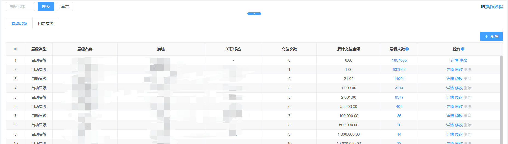
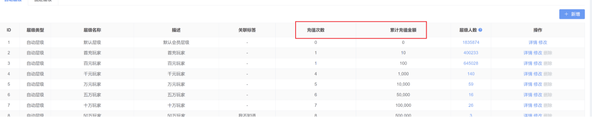
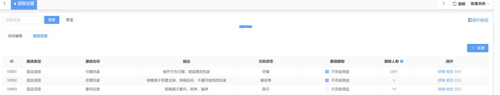
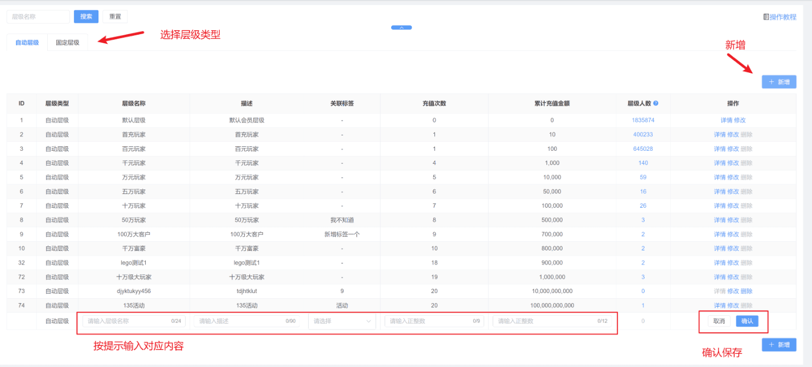

层级设置：

一、自动层级
（1）通过充值次数、充值金额条件进行自动调整层级（2项都符合才能晋升）

（2）层级人数：当前层级会员人数
（3）详情：具体跳转以下界面
温馨提示：可单选或批量调整会员层级和层级锁定（层级锁定后该会员无法通过充值条件进行自动修改层级）
（4）修改：点击后，即可在当前页对【层级昵称】/【描述】/关联标签/【充值次数】/【累计充值金额】进行调整修改（除默认层级）
（5）删除：删除对应层级（层级人数必须为0才可以进行操作）
二、固定层级
（1）主要用于观察会员使用，无法通过任何条件进行自动调整层级，具体例子如下：

温馨提示：操作行为可参考【自动层级】
三、新增层级
（1）即当前列表底部新增一行，填写对应内容新增层级，具体操作如下：

温馨提示：充值次数下一等级的数值必须大于或等于上一等级；累计充值金额下一等级的数值必须大于上一等级。